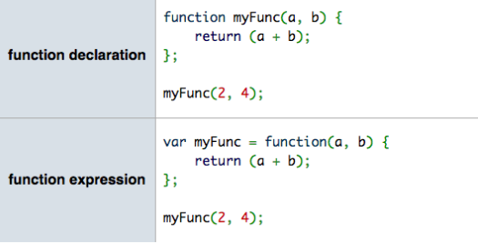
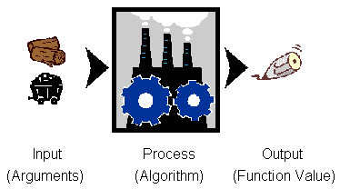
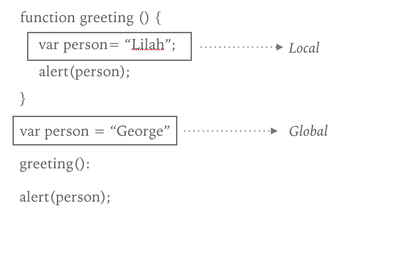
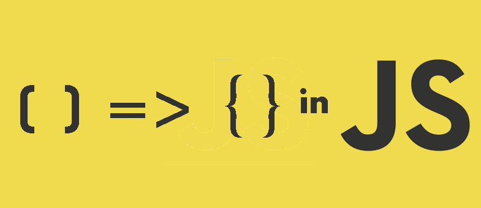

Functions
Computer Programming: Key Concepts
One of the most magnificent structures in the computer science world is the function.
Functions (sometimes called procedures) are mini programs that you can use over and over inside of your bigger program.
Functions are pieces of code that you can call over and over again.
Real Life Example
- Look up the lyrics to your favorite song and find a YouTube video of the song.
- Put the lyrics in a new Google Doc.
- Highlight the CHORUS each time it repeats. (Some songs will work better than others.
- After the first chorus, delete the remaining choruses and put "CHORUS" instead
Functions
- Efficiency
- Easy to correct problems in the code.
- Able to use the code in other projects easily.
- Use a language to express a solution to a problem.
Functions and JavaScript
Functions are at the heart of JavaScript. They let you write code that you can quickly use again and again.
Remember!: Our song exercise at the beginning of class? The chorus acts like a function that you can call over and over when you want to singer to sing those lyrics. What are some real life functions?
Coffee shop example
Let's talk about syntax
The following is how you write a function:
function functionName() {
//code you want to repeat
}
You name a function just like you name a variable. You should name a function something that makes sense in reference to what you are doing, and you need to use camel case.
Function names cannot start with a number.
Everything within the curly braces is the code block
Running a Function
The code that you put in the code block is run whenever the function is activated:
function myGreeting() {
alert("Good morning!");
}
To activate our code block, we need to call the function. You do it like this:
myGreeting();
The parenthesis are what actually call the function. They are very important!
Function
In summary, Functions are re-usable collections of statements.
First declare the function:
function sayMyName() {
console.log('Hi Jessica!');
}
Then call it (as many times as you want):
sayMyName();
Example in JSBin
//Create your function first
function alertRandom() {
//create a new random number each time the function is run
var randomNumber = Math.floor(Math.random()*6)+1;
alert(randomNumber);
}
//calling the function
alertRandom();
Calling a function more than once:
function alertRandom() {
var randomNumber = Math.floor(Math.random()*6)+1;
alert(randomNumber);
}
alertRandom();
alertRandom();
alertRandom();
alertRandom();
Variables and Functions
var alertRandom = function () {
var randomNumber = Math.floor(Math.random()*6)+1;
alert(randomNumber);
};
This is an anonymous function and will run as part of the variable.
We do have to end this statement with a semi-colon
Function Expressions and Declarations
Review
Which of the following describes a function?
- A function means the same things as a JavaScript program.
- A function let’s you store a block of code that you can use over and over again.
- A function is used to add decision-making to your program
- A function is used to hold similar pieces of information, like a database.
Review
Which of the following code snippets correctly shows how to create a function named sayHello which opens an alert dialog with the string "Hello" in it?
function sayHello {
alert("Hello");
}
function sayHello (
alert("Hello");
)
function sayHello() {
alert("Hello");
}
var function=sayHello() {
alert("Hello");
}
Coding Conventions: Spacing
Use newlines between statements and use spaces to show blocks.
Bad:
function addNumbers() {return num1 + num2;}
Good:
function addNumbers() {
return num1 + num2;
}
Functions change the flow
Up until this point, our programs have been running from top to bottom. Functions allow the browser interpreter to store information to be sure that proper code is being called depending on the contents of the function.
Many developers write their functions at the beginning of their code (all together).
Getting information from a function
Functions don't just run JavaScript statements. They can also return values that you can use elsewhere in a program.
Functions can also give something back when they finish. This is called returning a value.
function goToCoffeeShop() {
return "Espresso is on the way";
}
The value that's returned by the function can then be used in your program.
Getting information from a function
‘return’ing something in JavaScript is very useful
You can use its values for many other parts of your program (like displaying on your website, using to calculate new things, etc).
Return statements should be the last thing in the code block of a function because they immediately exit the function.
Return Values
The return keyword returns a value to whoever calls the function (and exits the function):
function addNumbers(num1, num2) {
var result = num1 + num2;
return result; // Anything after this line won't be executed
}
var sum = addNumbers(5, 2);
You can use function calls in expressions:
var biggerSum = addNumbers(2, 5) + addNumbers(3, 2);
You can even call functions inside function calls:
var hugeSum = addNumbers(addNumbers(5, 2), addNumbers(3, 7));
Review
After the code below runs, what value is stored in the variable dayOfWeek?
function getDay() {
return "Monday";
alert("Calculating day");
return "Friday";
}
var dayOfWeek = getDay();
Washing Machine
What is the 'return' value of running a load of laundry?
How is this different than using console.log()?
Create in jsbin
1. Create a function named getYear -- don't add any code inside the function yet.
2. Inside the function's code block add this line of code
var year = new Date().getFullYear();
This creates a new variable and stores the current year in it.
3. Now, add a statement that returns this variable from the function.
4. Call the getYear function: store the returned value of the function in a new variable named yearToday.

Sending information to a function
You can give information to a function to change how it works.
Coffee shop example
JavaScript functions can also accept information called an argument, which you send to the function.
The argument is stored in a variable called a parameter that you can use inside the function.
function myFunction(parameter) {
//code block
}
Parameters act a lot like variables.
Parameters and arguments
Passing an argument to a function
function goToTheCoffeeShop(drink) {
alert(drink + " is on the way!");
}
goToTheCoffeeShop("Espresso");
You can pass different values and get different results!
You can also have multiple arguments in a function.
Visual!
Multiple Arguments
In our example, let’s say I also want something to eat.
function goToTheCoffeeShop(drink, pastry) {
alert(drink + "and "+ pastry + " are on the way!");
}
goToTheCoffeeShop("Espresso", "scone");
You can pass different values and get different results!
You can also have multiple arguments in a function.
You won’t want to add more than 4 or 5 arguments to a function. This can get tedious.
Exercise
In JSBin, let’s create a function to calculate the area of a rectangle.
Arguments Review
Functions can accept any number of named arguments:
function sayMyName(name) {
console.log('Hi, ' + name);
}
sayMyName('Claire');
sayMyName('Testy McTesterFace');
function addNumbers(num1, num2) {
var result = num1 + num2;
console.log(result);
}
addNumbers(7, 21);
addNumbers(3, 10);
You can also pass variables:
var number = 10;
addNumbers(number, 2);
addNumbers(number, 4);
Fun with Functions
var nameImprover = function(name, adj) {
return 'Col ' + name + ' Mc' + adj + ' pants';
};
Return vs Console.log()
var nameImprover = function(name, adj) {
return 'Col ' + name + ' Mc' + adj + ' pants';
};
var nameLogger = function(name, adj) {
var newName = 'Col ' + name + ' Mc' + adj + ' pants';
console.log(newName);
};
Arguments Keyword
var addTwo = function(a, b) {
console.log(arguments); // logs [3,10]
return a + b;
};
addTwo(3, 10); // 13
More on Variables
As you create more complex programs, you'll end up adding multiple functions to your scripts.
It's possible, even likely, that a function defines and uses the same name as a variable used elsewhere in your script.
Example:
You might write some JavaScript with a variable named “width”, but also have a function named computeArea that also has a width variable inside it.
Javascript can handle it!
JavaScript can handle this!
Each function acts like its own individual universe and the variables that are created within that universe don't interact with the variables created in another universe or another function.
Scope
Variable Scope
function greeting() {
var person= "Lilah";
alert(person);
}
var person = "George";
greeting();
alert(person);
GLobal vs Local
GLobal vs Local
LOCAL: A variable declared in a function only lives inside that function and can't be accessed or changed outside of that function.
GLOBAL: Any variables you create in a script that aren't contained in a function are in this bigger universe called the global scope.
**All functions can access the global scope.
The word “scope” refers to where a variable is visible and accessible.
Things to remember
1. As long as you use the var keyword to create the variable, the variable will only be used in the program when it's parent function is executing.
2. You can use the let keyword to declare variables inside of functions. This means that they are block scoped
Variable Scope
A variable with "local" scope:
function addNumbers(num1, num2) {
var localResult = num1 + num2;
console.log("The local result is: " + localResult);
}
addNumbers(5, 7);
console.log(localResult);
Variable scope
A variable with "global" scope:
var globalResult;
function addNumbers(num1, num2) {
globalResult = num1 + num2;
console.log("The global result is: " + globalResult);
}
addNumbers(5, 7);
console.log(globalResult);
How does your browser read your JS code?
- Two trips through the code
- Figure out and store the variable/function scopes
- Execute the code
- Let's watch this
Exercise
The Fortune Teller
Why pay a fortune teller when you can just program one yourself?
- Write a function named tellFortune that:
- Outputs someone's fortune to the screen like so: "You will be a [job] in [city], and married to [partner's name] with [number] kids."
- Call that function 3 times with 3 different values for the arguments.
Exercise
The Age Calculator
Forgot how old you are? Calculate it!
- Write a function named calculateAge that:
- Takes 2 arguments: birth year, current year.
- Calculates the 2 possible ages based on those years.
- Outputs the result to the screen like so: "You are either NN or NN"
- Call the function three times with different sets of values.
- Bonus: Figure out how to get the current year in JavaScript instead of passing it in.
Review
var divideByThree = function(number) {
var val = number / 3;
console.log(val);
};
How would you call this function so that 3 is logged to the console?
Review
var greeting = function(name) {
console.log("Great to see you," + " " + name);
};
How would you call this function so that “Great to see you, Grace Hopper” is logged to the console?
Review
var foodDemand = function(food) {
console.log("I want to eat" + " " + food);
};
How would you call this function so that “I want to eat Chinese food” is logged to the console?
Review
var coffeeCost = function(cost) {
var total = cost * 5;
console.log(total);
}
Jessica drinks five coffees a day. How would you call this function if the cost of her coffee is $3?
Review
Given the code below, what appears in the alert dialogue when this program runs?
var name = "Wonder Woman";
function setName() {
var name = "Diana Prince";
}
setName();
alert(name);
ES6 and Functions
Remember ES6 introduces new tools in your JavaScript tool belt.
One of those tools is Arrow Functions
Arrow Functions
Arrow functions save you time by having to type fewer words (function, return, etc)
They also provide some additional tools relating to binding (we will talk about this later)
function addTwoNumbers(x,y) {
return x + y;
}
// versus
var addTwoNumbers = (x,y) => x + y;
Here is a great resource by Kyle Simpson
Arrow Functions
The arrow function includes a list of parameters surrounded by ( .. ), followed by the => marker, followed by a function body.
The parameter list can be empty.
The code block only needs to be enclosed by { .. } if there's more than one expression. If there's only one expression, and you omit the surrounding { .. }, there's an implied return in front of the expression.
Different Arrow Functions
var funcWithOneExpression = x => x * 2;
var funcWithMultipleExpressions = (x,y) => {
var z = x * 2 + y;
y++;
x *= 3;
return (x + y + z) / 2;
};
Arrow functions are always function expressions; there is no arrow function declaration.
THE END
Thank you for your attention!